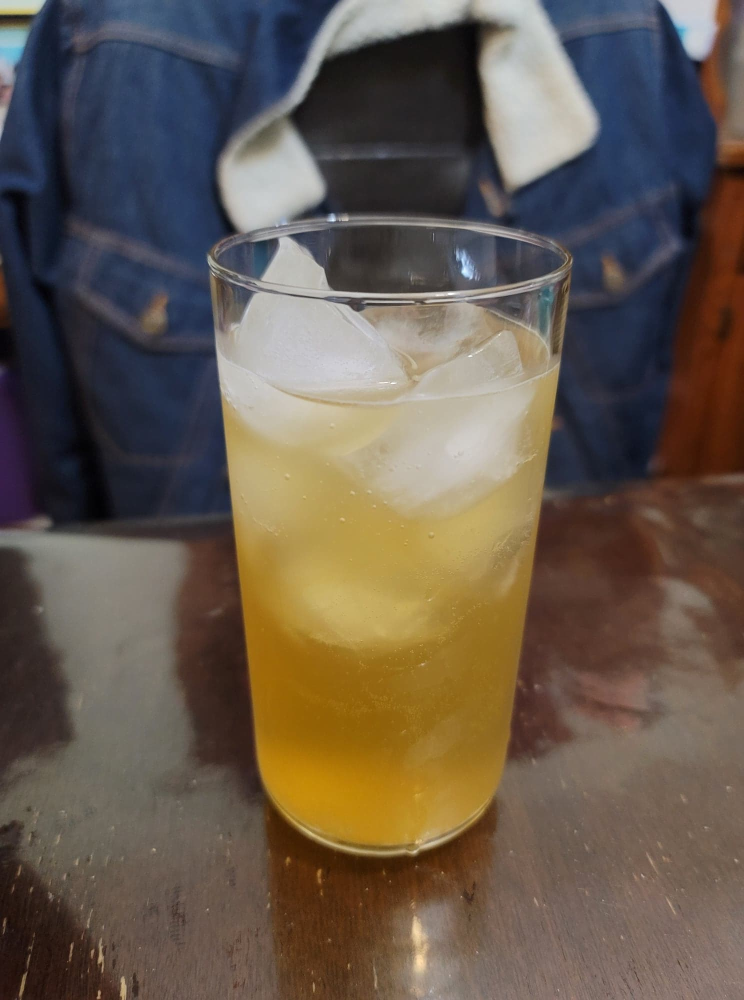

Lemon Ginger Honey Kombucha

Ingredients:
- 4 cups Kombucha, after 1st fermentation
- 1 tbsp Ginger, minced
- 1 tbsp Honey
- 1 Lemon, juiced
Instructions:
- Evenly distribute the ingredients into 2 16 oz flip-top bottles. Let ferment for 3-7 days in a dark, warm location, or until carbonated to preference. Then transfer to a fridge and serve cold.